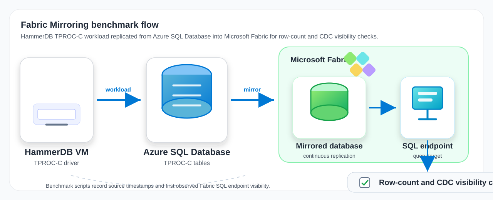

This post is part of a benchmark series for Microsoft Fabric Mirroring across operational database sources. This article focuses on Azure SQL Database as the source system and HammerDB TPROC-C as the transactional workload.
The goal is not to publish a universal service-level number. The goal is to provide a reproducible way to deploy a source system, generate an OLTP dataset, configure Fabric Mirroring, and measure how quickly data becomes queryable through the Fabric SQL endpoint for specific test scenarios.
Microsoft Fabric Mirroring continuously replicates supported operational data sources into Fabric so the data can be queried and analyzed without building a custom ETL pipeline. For this benchmark, Azure SQL Database is mirrored into a Fabric mirrored database. The validation queries run against the mirrored database SQL endpoint.
The benchmark uses HammerDB TPROC-C because Fabric Mirroring sources are usually transactional systems. TPROC-C gives us an initial OLTP-shaped dataset, ongoing transactional changes, and a large stock table that can be used for controlled bulk-update tests.
HammerDB VM
-> Azure SQL Database
-> Microsoft Fabric Mirroring
-> Fabric mirrored database SQL endpoint
-> Row-count and CDC visibility checks

| Requirement | Notes |
|---|---|
| Azure subscription | Permission to deploy a resource group, Azure SQL Database, VM, Fabric capacity, networking, firewall rules, and monitoring resources. |
| Microsoft Fabric tenant | Permission to create a workspace, assign Fabric capacity, and create mirrored database items. |
| Fabric account | An account that can create the mirrored database connection. This run used Organizational account authentication. |
| Azure SQL Entra admin principal | UPN and object ID for the principal that will be configured as the Azure SQL Microsoft Entra administrator. |
| Admin SSH public key | Required by the Deploy to Azure form for the benchmark VM. Generate an SSH key pair and paste the public key value, for example the contents of ~/.ssh/id_rsa.pub or ~/.ssh/id_ed25519.pub. See Create and use an SSH public-private key pair for Linux VMs in Azure. |
| Current client IP address | Required by the Deploy to Azure form to restrict SSH access to your current machine. Use your public IPv4 address in CIDR form, for example 203.0.113.10/32. From a terminal, curl -4 ifconfig.me can show the IP; append /32 for a single-address rule. You can also use WhatIsMyIPAddress.com. |
| Setting | Value |
|---|---|
| Source system | Azure SQL Database |
| Database name | tprocc |
| Azure SQL default SKU | GP_Gen5_4 |
| Fabric capacity SKU | F8 |
| Workload | HammerDB TPROC-C |
| TPROC-C scale | 10 warehouses |
| Build virtual users | 4 |
| Mirroring option for new-table scenario | Add any new tables to replication enabled |
The easiest deployment path is the public-network Azure SQL-specific Deploy to Azure button. It uses azuredeploy-azure-sql-db.json, so the Azure Portal form only asks for Azure SQL Database, benchmark VM, Fabric capacity, and shared deployment values:
| Parameter | Value |
|---|---|
location | swedencentral, or another region where Azure SQL Database, VM, and Fabric capacity are available |
adminSshPublicKey | Your SSH public key, such as the contents of ~/.ssh/id_ed25519.pub |
currentClientIpAddress | Your public IPv4 address with /32, such as 203.0.113.10/32; find it with curl -4 ifconfig.me or WhatIsMyIPAddress.com |
azureSqlDatabaseName | tprocc |
azureSqlAzureAdOnlyAuthentication | true for Entra-only tenants |
sqlEntraAdminLogin / sqlEntraAdminObjectId | Defaults to the signed-in deploying user; override if another user or group should administer Azure SQL |
fabricAdminUpn | Defaults to the signed-in deploying user; override if another user should administer the Fabric capacity |
customTags | Optional JSON tags, for example {"CostCenter":"12345"}; built-in benchmark tags are retained |
applyCustomTagsToAzureSql | Keep true to apply customTags to the Azure SQL server and database; use the equivalent selectors to choose VM, Fabric, networking, and monitoring |
fabricCapacitySku | F8 for the baseline run |
The template deploys only the Azure SQL Database source, benchmark VM, Fabric capacity, networking, firewall rules, and monitoring. The benchmark VM is provisioned with a system-assigned managed identity; later steps use that identity for HammerDB-to-Azure-SQL authentication in Entra-only tenants.
For an Azure SQL environment that prohibits public endpoints, use the private-network template. It disables Azure SQL public network access and deploys a private endpoint, private DNS zone, and dedicated VNet data gateway subnet. Register Microsoft.PowerPlatform, then create the VNet data gateway manually in Manage connections and gateways and select it when configuring the Fabric connection.
HammerDB, sqlcmd, and the SQL Server ODBC driver are runtime tools used on the benchmark VM after deployment. They are not prerequisites for the reader's local machine.
Fabric mirrored database setup remains an interactive Fabric step because authentication prompts and tenant permissions vary.
The repository still keeps the original all-source azuredeploy.json for advanced use, but Azure Portal custom deployment does not hide unrelated parameters in a single conditional ARM template. Use the source-specific template for a cleaner portal experience.
If you prefer a terminal-driven setup, or you are using an AI agent to run the deployment, use the CLI script path:
SOURCE_TYPE=azure-sql-db \
AZURE_RESOURCE_GROUP=rg-fabric-sqldb-mirror-bench \
PROJECT_NAME=fsqlmb \
scripts/provision/deploy-azure.sh
In this tenant, Azure SQL was configured for Entra-only authentication. HammerDB connected from the benchmark VM through the VM managed identity.
export AZURE_SQL_SERVER_NAME="<server-name>"
export BENCHMARK_VM_NAME="<vm-name>"
scripts/provision/setup-azure-sql-vm-mi-admin.sh
Then configure HammerDB to use Entra/MSI authentication and keep BCP disabled:
export AZURE_SQL_AUTH_MODE=entra
export AZURE_SQL_MSI_OBJECT_ID="<benchmark-vm-managed-identity-object-id>"
export AZURE_SQL_TPROC_C_DATABASE=tprocc
export AZURE_SQL_TPROC_C_USE_BCP=false
"${HAMMERDB_CLI:-hammerdbcli}" auto scripts/benchmark/hammerdb-build-sqlserver-tprocc.tcl
BCP was disabled because the HammerDB BCP load path attempted SQL authentication in this Entra-only validation. The ODBC/MSI path worked reliably.
Add benchmark-owned columns to dbo.stock before Fabric Mirroring starts. This ensures the large-update scenario is included in the first replication attempt rather than relying on post-mirroring schema changes for the largest table.
sqlcmd $AZURE_SQL_SQLCMD_ARGS \
-i scripts/provision/setup-tprocc-benchmark-columns-azure-sql.sql
Create the marker table used for controlled CDC visibility checks:
python3 scripts/provision/setup-azure-sql-cdc-marker-msi.py
For this run, the Fabric mirrored database connection used Organizational account authentication. The same Entra principal needed a contained Azure SQL database user and mirroring permissions.
export FABRIC_ENTRA_PRINCIPAL="<UPN used in Fabric>"
export FABRIC_ENTRA_OBJECT_ID="<Entra object ID>"
export FABRIC_ENTRA_PRINCIPAL_TYPE=E
python3 scripts/provision/grant-azure-sql-fabric-entra-principal-msi.py
The helper grants the permissions needed by Fabric Mirroring, including SELECT, ALTER ANY EXTERNAL MIRROR, VIEW DATABASE PERFORMANCE STATE, and VIEW DATABASE SECURITY STATE.
tprocc Azure SQL database.dbo.fabric_cdc_latency_marker, or mirror all data.| Scenario | Purpose | Script or query file |
|---|---|---|
| Initial sync parity | Confirms the TPROC-C tables are visible in Fabric with matching row counts. | scripts/benchmark/measure-initial-sync.py |
| Marker insert latency | Writes controlled marker rows to Azure SQL and polls Fabric until each marker appears. | scripts/benchmark/run-cdc-latency-test.py |
| New table auto-replication | Creates a new source table after mirroring starts and checks whether Fabric auto-adds it. | scripts/benchmark/run-new-table-auto-replication-test.py |
| Large stock update | Updates benchmark-owned columns on 100,000 rows in dbo.stock and waits for all updated rows in Fabric. | scripts/benchmark/run-stock-bulk-update.py |
| Small-table schema evolution | Adds a post-mirroring benchmark column to dbo.warehouse. | scripts/provision/setup-tprocc-schema-evolution-azure-sql.sql and scripts/benchmark/check-fabric-table-schema.py |
| Fabric status capture | Captures Fabric table mirroring status snapshots where the API is available. | scripts/benchmark/capture-fabric-mirroring-status.py |
The benchmark scripts are parameterized through command-line arguments and environment variables. Start with the default 10 TPROC-C warehouses, then change one variable at a time.
| Setting | Environment variable or argument | Default |
|---|---|---|
| TPROC-C size | TPROC_C_WAREHOUSES | 10 |
| Marker batches | CDC_MARKER_BATCHES | 60 |
| Marker write interval | CDC_MARKER_INTERVAL_SECONDS | 5 |
| Poll interval | CDC_POLL_INTERVAL_SECONDS | 5 for marker checks, 15 for some batch scenarios |
| Stock update size | STOCK_UPDATE_BATCH_SIZE / --batch-size | 100000 |
| New table rows | NEW_TABLE_TEST_ROWS / --rows | 1000 |
python3 scripts/benchmark/run-cdc-latency-test.py \
--source-type azure-sql-db \
--source-sqlcmd-args "$AZURE_SQL_SQLCMD_ARGS" \
--fabric-sqlcmd-args "$FABRIC_SQLCMD_ARGS" \
--fabric-marker-table dbo.fabric_cdc_latency_marker \
--poll-seconds 1 \
--batches 30
python3 scripts/benchmark/run-stock-bulk-update.py \
--source-type azure-sql-db \
--source-sqlcmd-args "$AZURE_SQL_SQLCMD_ARGS" \
--batch-size 100000 \
--fabric-sqlcmd-args "$FABRIC_SQLCMD_ARGS" \
--fabric-stock-table "dbo.stock" \
--poll-seconds 1
For publication-quality numbers, run each scenario multiple times, keep the polling interval low, and save the raw CSV/JSON outputs with the Azure SQL SKU, Fabric capacity SKU, TPROC-C warehouse count, and time window.
The scripts measure user-observed visibility through the Fabric SQL endpoint. They record the source commit timestamp, poll the Fabric SQL endpoint, and record the first time the expected row or row count is visible.
That means each number is an observed upper bound, not an exact internal replication timestamp. If the poll interval is 15 seconds, the actual visibility could have happened up to 15 seconds before the script detected it. SQL endpoint session freshness and Fabric status API refresh timing can also affect when a polling client observes the change.
For the most reliable comparison, use --poll-seconds 1, reconnect or use fresh Fabric SQL endpoint sessions during polling if stale reads are suspected, capture Fabric mirroring status snapshots, repeat each scenario, and publish min, p50, p95, and max instead of a single run. Treat new-table auto-replication and schema evolution separately from row-level CDC because they include control-plane/table-discovery work.
Initial row-count parity succeeded:
| Table | Source rows | Fabric rows |
|---|---|---|
dbo.warehouse | 10 | 10 |
dbo.district | 100 | 100 |
dbo.item | 100,000 | 100,000 |
dbo.stock | 1,000,000 | 1,000,000 |
dbo.customer | 300,000 | 300,000 |
dbo.orders | 300,000 | 300,000 |
dbo.order_line | 3,000,481 | 3,000,481 |
dbo.new_order | 90,000 | 90,000 |
dbo.history | 300,000 | 300,000 |
These are live-observed results from the validation environment. They should be read as first-run observed visibility measurements, not as definitive product limits.
| Scenario | Observed result |
|---|---|
| Marker insert visibility | 354.6 seconds |
| New table auto-replication, 1,000 rows | 151.9 seconds |
warehouse schema evolution and 2 updated rows | 430.2 seconds |
stock 100K-row update visibility | 174.2 seconds |
The new-table scenario confirmed that Fabric picked up dbo.fabric_auto_table_125329_c687 automatically because add any new tables to replication was enabled.
The large-update scenario used the TPROC-C stock table. At 10 warehouses, stock contains 1,000,000 rows. The test updated 100,000 rows and Fabric showed all 100,000 updated rows after about 174 seconds from the last source update timestamp.
The marker, new-table, schema-evolution, and stock-update numbers should be rerun with a 1-second poll interval and repeated trials before publication if the blog needs precise benchmark statistics.